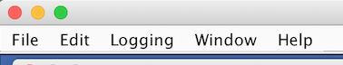
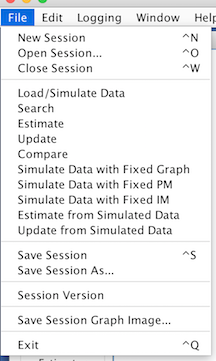
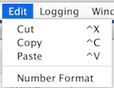
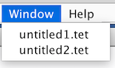
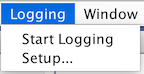
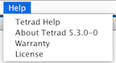

The main menu bar in Tetrad lets you manage Tetrad sessions, lets you perform some editing operations on the current
session, and gives you access to the help functionality (this), among other things. It looks like this:

The function of each item in each menu is described below. If you were looking for help for popup menus for boxes,
see Popup Menus.
The File Menu

Here's what each item does in the File menu.
- New Session - creates a new, empty Tetrad session. Your previous session is still available-just go to
the Session menu--see below.
- Open Session - prompts you for a saved Tetrad session file (with suffice ".tet")
and opens it.
- Close Session - closes your main workbench and leaves you in Tetrad or in a stored session in memory.
If there are no sessions you get a blank Tetrad screen with no workbench You can't do anything in the program
until another session is opened or a new one is created.
- Save Session - saves all of your work, data, the whole thing, to a file (suffix ".tet") so
that you can call it back up later. You are asked to give the session a name if you haven't done so already.
- Save Session As - Does the same thing as Save Session, but always asks you for a file name.
- Session Version - Gives version information for the current session. See Tetrad Versioning.
- Save Screenshot - Saves a screenshog (PNG format) of the entire Tetrad Session, in case you don't want
to fool around with Photoshop or GIMP.
- Save Session Workspace Image - Saves an image of just the session workspace. Leaves out the menubar and toolbar. This is useful if your session flowchart is
larger than your screen.
- Exit - Gets you out of Tetrad the polite way.
In using Tetrad you will put together a sequence of boxes connected by flowchart arrows. (See How to Build a Session.) Some sequences are so commonly used, that Tetrad
will
insert the entire sequence for you--boxes and arrows--in the workbench all at once.
In addition, there are several
shortcut items to help you create flowcharts of sessions nodes
on the
workbench. The Load Data/Simulate buttons puts a Data node on the workbench. If you double click this and
select Loaded Data you will be able to load data usign the File menu in that box. If you select
Simulation, you will be able to select a model type and simulate random data. The Search item puts a Data box
on the workbench connected to a Search box. If you double click the Data box you will be able to load or simulate
data, as above, and then if you double click the Search box, you will be able to search over this data for a
suitable model or class of models. The easiest way to see what these menu items do is to try them.
See Using Templates for more details.
The Edit Menu

Here's what each item does in the Edit Menu.
- Cut - Cuts out any selected boxes from the workbench (together with any edges between them) and allows
you to paste them. For advise on how to select groups of boxes, see Selecting Groups of Nodes.
- Copy - Same as Cut, but leaves the original nodes in the session.
- Paste - Paste the cut or copied boxes slightly down and to the right of the original ones, either in
the current session or in some other session. Multiple pastes are supported; if you paste multiple times, new
copies appear down and to the right of the originally selected boxes.
- Number Format - This lets you set the number format used throughout the code. If you need more
digits to the right of the decimal place, here's the place to do it.
The Window Menu

Tetrad can keep multiple sessions open at once, but only one
workbench is visible at a time. "Sessions" lists all of your open
sessions and lets you switch to the workbench of whichever session you
want. Your sessions are automatically given a name, e.g., "Untitled1.tet" unless you have saved them with a name.
The Logging Menu

Tetrad is able to do logging on search algorithms and other components. This
menu lets you choose where to put the logs, what the file prefix should be for the
logs (they will be sequentially numbered), and lets you start and stop logging.
Each time you start logging, a new log file will be created, and logging will
continue until you stop logging.
The Help Menu

The items listed do the following.
- Tetrad Manual - That's this. You already know about it.
- About Tetrad [version-number] - Shows information about the project in general.
- Warranty - Warranty information displayed as per requirements of the GNU General Public License.
- License - License information displayed as per requirements of the GNU General Public Licence.